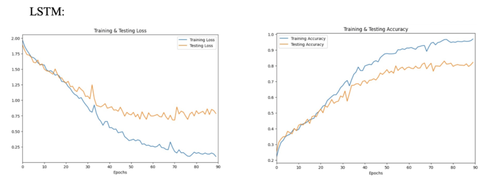
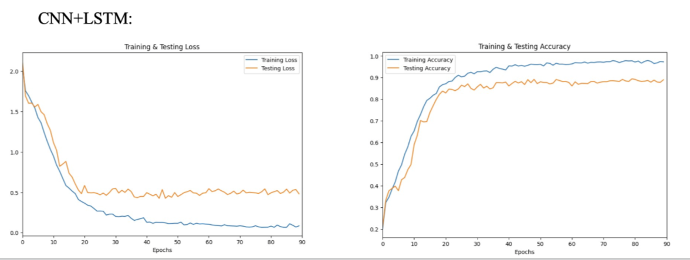
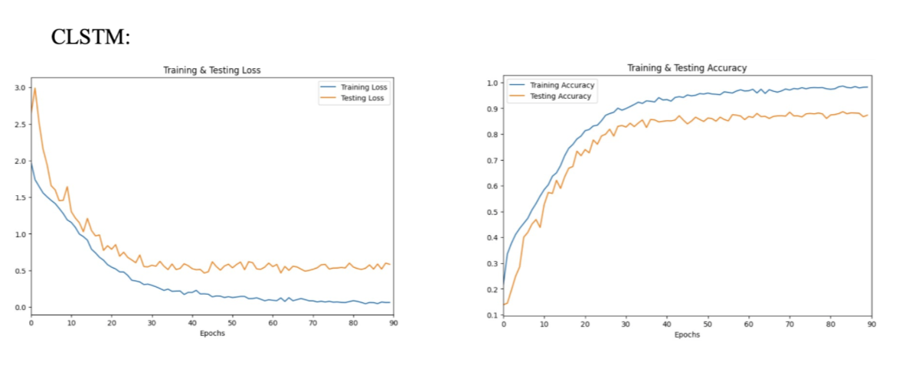
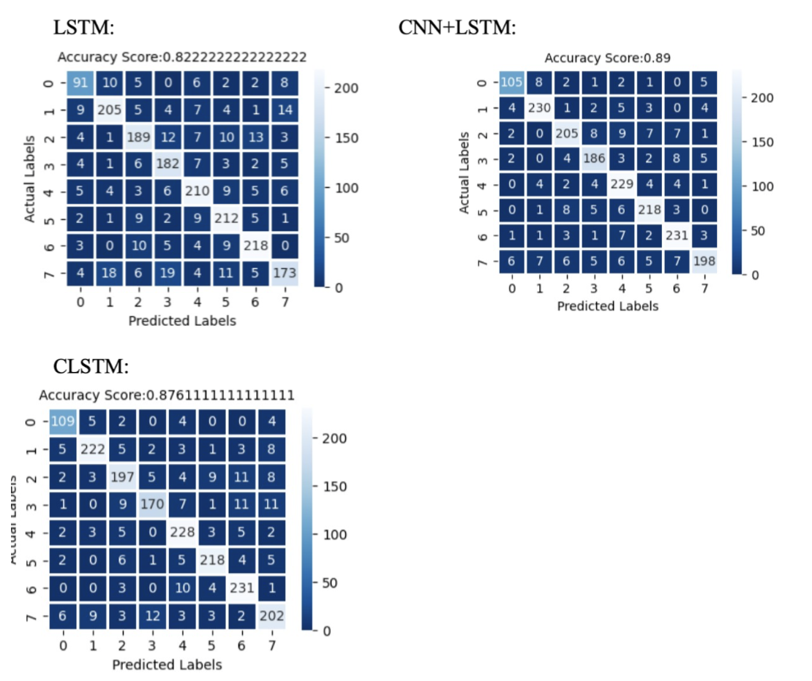
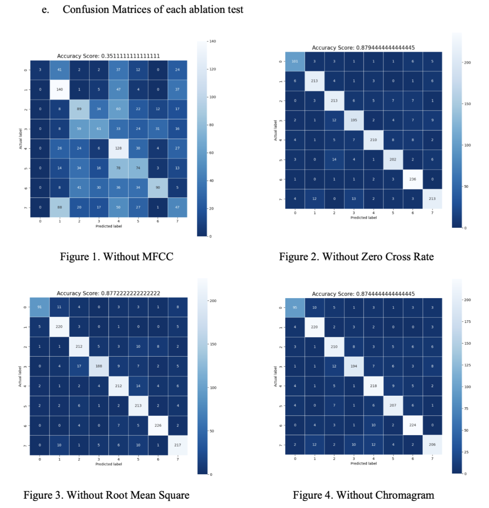

The goal of this project is to classify voice audio into "calm", "happy", "sad", "angry", "fearful", "disgusted", "surprised".
We employed the model proposed in 'An ensemble 1D-CNN-LSTM-GRU model with data
augmentation for speech emotion recognition' after researched.
Three different models- LSTM, CNN+LSTM, CLSTM are tested.
The LSTM model purly consists of 7 LSTM layers with dropout layers,
CNN+LSTM model mix convolution layers with one LSTM layer, and CLSTM includes
multiple CNN layers and LSTM layers. In CLSTM, there are three convolutional blocks followed by some LSTM layers.





emeraldb01.cs09@nycu.edu.tw
0911-720-746
新竹市東區大學路1001號女二舍761室